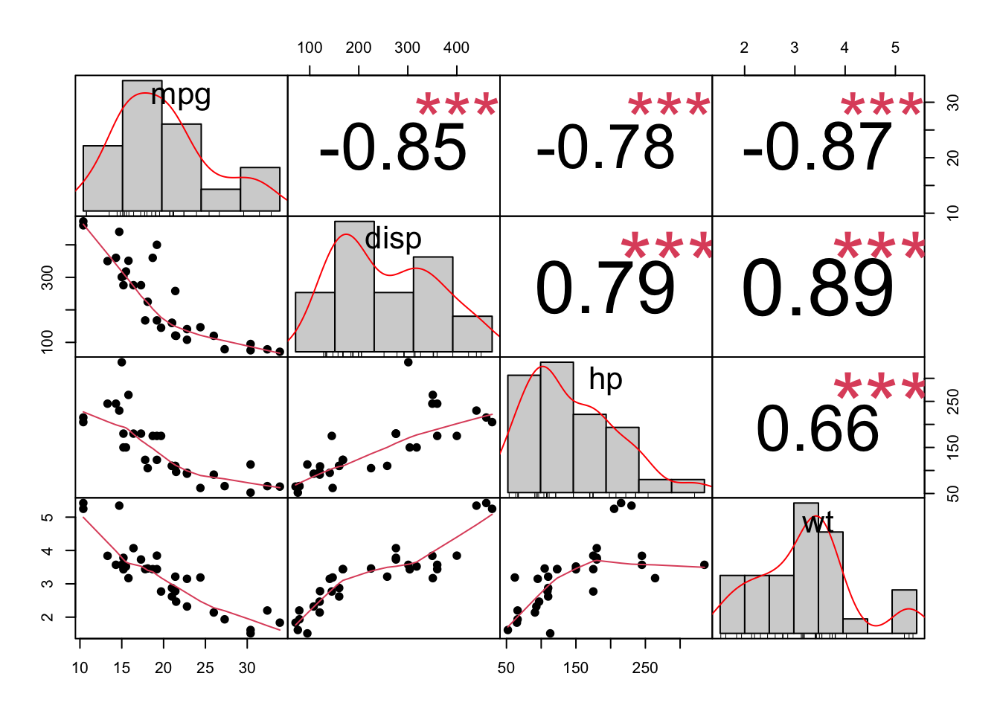

# Install required libraries (if not already installed)
#install.packages(c("ggplot2", "corrplot", "ggcorrplot",
#"PerformanceAnalytics", "GGally", "psych", "corrr"))
# Load necessary libraries
library(ggplot2)
library(corrplot)
library(ggcorrplot)
library(PerformanceAnalytics)
library(GGally)
library(psych)
library(corrr)(2) Correlation - R
Again, this practical is also in R. This is an example of the great amount of resources available in open-source programming languages (will also be able to find similar things in Python), where new packages are developed and made available constantly. As key insight, explore, probably what you need is already out there for you to use!
For you to see the breadth of possibilities out there, here is an example of different ways in which to describe and learn about the correlation matrix of your dataset.
To assess the association between two variables, you can produce a scatter plot like below:
set.seed(123)
x <- rnorm(100)
y <- x + rnorm(100, sd = 0.5)
ggplot(data = data.frame(x, y), aes(x = x, y = y)) +
geom_point(color = "blue", size = 2) +
geom_smooth(method = "lm", color = "red", se = FALSE) +
labs(title = "Correlation Plot with ggplot2",
x = "X values", y = "Y values") +
theme_minimal()`geom_smooth()` using formula = 'y ~ x'
Now we are going to produce the correlation matrix, where in a go, you get insight of all the association happening in your dataset.For this we are going to use the mtcars data (A built-in dataset that contains measurements on 11 different attributes for 32 different cars). More specifically, the chosen variables are:
mpg (Miles per Gallon): Represents the fuel efficiency of the car. Higher values, better efficiency.
disp (Displacement): Represents the engine displacement, which is the total volume of all the cylinders in the engine.
hp (Horsepower): Represents the power output of the car’s engine.
wt (Weight): Represents the weight of the car.
data <- mtcars[, c("mpg", "disp", "hp", "wt")]Can you calculate the correlation between them? Try out at least a pair.Remember there are different ways in which to calculate correlation https://www.sthda.com/english/wiki/correlation-test-between-two-variables-in-r and you can specify the type in your code cor(x, y, method = c("pearson", "kendall", "spearman"))
Now that you know what to expect, lets proceed with the correlation matrices (same thing as above, but all in a go!):
—–corrplot Correlation Matrix —–

—–corrplot Correlation Matrix —–
ggcorrplot(cor_matrix,
method = "square",
type = "lower",
lab = TRUE,
title = "mtcars",
lab_size = 3) +
theme_minimal()Warning: `aes_string()` was deprecated in ggplot2 3.0.0.
ℹ Please use tidy evaluation idioms with `aes()`.
ℹ See also `vignette("ggplot2-in-packages")` for more information.
ℹ The deprecated feature was likely used in the ggcorrplot package.
Please report the issue at <https://github.com/kassambara/ggcorrplot/issues>.
—–PerformanceAnalytics Pairwise Correlation Plot —–
chart.Correlation(data, histogram = TRUE, pch = 19)
###—–GGally Pairwise Correlation Plot —–
ggpairs(data,
title = "Pairwise Correlation Plot with GGally",
lower = list(continuous = wrap("smooth", method = "lm")),
upper = list(continuous = wrap("cor", size = 3)))
###—– psych Enhanced Pairwise Correlation Plot —–
pairs.panels(data,
method = "pearson",
hist.col = "lightblue",
density = TRUE,
ellipses = TRUE)
###—– Base R Heatmap —–
# ----- 8. Base R Heatmap -----
heatmap(cor_matrix, symm = TRUE,
main = "Correlation Heatmap",
col = colorRampPalette(c("red", "white", "blue"))(20))
# ----- 10. corrr Tidy Correlation -----
cor_matrix_tidy <- correlate(data)Correlation computed with
• Method: 'pearson'
• Missing treated using: 'pairwise.complete.obs' term mpg disp hp wt
1 mpg -.85 -.78 -.87
2 disp -.85 .79 .89
3 hp -.78 .79 .66
4 wt -.87 .89 .66 # Network-style correlation plot
cor_matrix_tidy %>%
network_plot(min_cor = 0.3)Warning: Using `size` aesthetic for lines was deprecated in ggplot2 3.4.0.
ℹ Please use `linewidth` instead.
ℹ The deprecated feature was likely used in the corrr package.
Please report the issue at <https://github.com/tidymodels/corrr/issues>.
What are your insights? Do they make sense? Remember:
mpg (Miles per Gallon): Represents the fuel efficiency of the car. Higher values, better efficiency.
disp (Displacement): Represents the engine displacement, which is the total volume of all the cylinders in the engine.
hp (Horsepower): Represents the power output of the car’s engine.
wt (Weight): Represents the weight of the car.